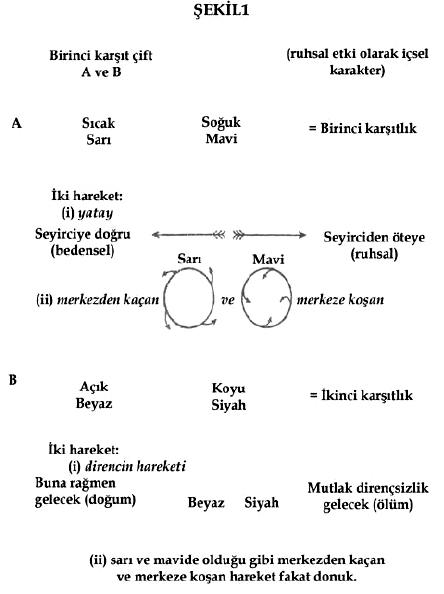
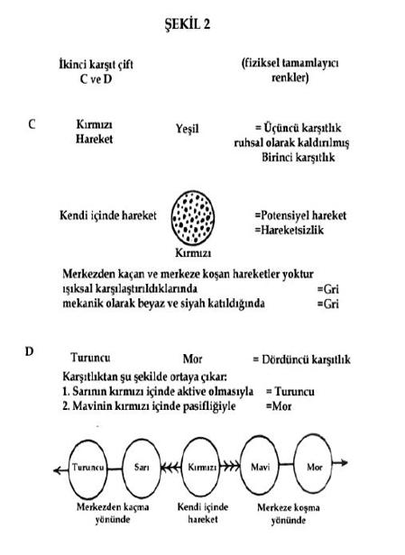
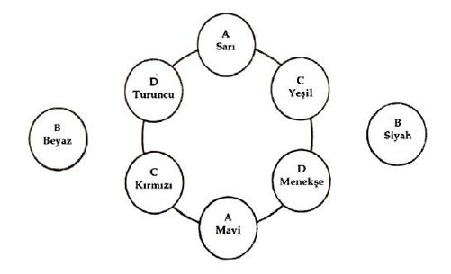

(Venedik Taciri, V. Bölüm, I. Sahne)
Müzik ruhu doğrudan etkiler ve onda yankı bulur, çünkü az olsun çok olsun müzik, doğuştan insanın içindedir.[28]
“Sarı, turuncu ve kırmızının neşe ve bolluk hissi verdiğini herkes bilir,” (Delacroix).[29]
Bu iki alıntı, sanat dalları, özellikle de müzikle resim arasındaki derin ilişkiyi göstermektedir. Goethe, resmin bu ilişkiyi esas alması gerektiğini söylemiş ve bu kâhince öngörüsüyle, resmin bugünkü durumunu önceden haber vermiş gibidir. Aslında resim daha yolun başındadır ve bu yolu izleyerek, sanatı kendi olanaklarıyla soyut düşünceye taşıyacak ve sonunda saf sanatsal kompozisyona varacaktır.[30]
Resmin hizmetinde iki silah vardır:
1- Renk.
2- Form.
Form, kendi başına (gerçek ya da başka türlü) bir nesneyi temsil edebilir ya da uzama veya yüzeye salt soyut bir sınır olabilir.
Renk kendi başına bulunamaz; sınırsız yapamaz.[31] Sınırsız bir kırmızı ancak zihinde bulunabilir. Kırmızı sözcüğü duyulduğunda, renk, belirli sınırlar olmaksızın akla gelir. Sınırlar, gerekiyorsa canlandırılır. Gözle görülmeyip zihinde canlandırılan kırmızı, hem belirli hem de belirsiz bir izlenim bırakır ve ruhsal bir armoni meydana getirir. “Belirsiz” diyorum, çünkü sıcaklık ya da soğukluk hissi vermez. Böyle vasıfların, özgün kırmızılığın modifikasyonları olarak sonradan hayal edilmeleri gerekir. “Belirli” diyorum, çünkü ruhsal armoni sıcaklık ya da soğukluk gibi sonradan gelen vasıflara gerek duymaksızın oluşur. “Trompet” denildi mi duyulan trompet sesi de benzer bir durumdur. Tek başına mı diğer çalgılarla birlikte mi, açık havada ya da bir odada mı, bir sürücü, avcı, asker ya da müzisyen tarafından mı çalınıyor fark etmez, ruh yalnızca sesi duyar.
Ancak kırmızı, (resimde olduğu gibi) maddi bir formda sunulduğunda:
(1) mevcut kırmızı tonlarından birine ve (2) etrafındaki diğer renklerden ayrılmış, sınırlı bir yüzeye sahiptir. Bu koşulların (öznel olan) ilki, (nesnel olan) ikincisinden etkilenir, çünkü komşu renkler kırmızının tonunu etkiler.
Renk ve form arasındaki bu temel bağlantı bizi formun renk üzerindeki etkileri sorusuna taşır. Form, tamamıyla soyut ve geometrik olmasına rağmen ruhsal bir güce sahiptir. Bir üçgenin (dar açılı, geniş açılı ya da eşkenar olsun) kendine özgü bir ruhsal değeri vardır. Bu değer, başka formlarla ilişkilerine bağlı olarak bir şekilde değişebilse de, temel niteliğini kaybetmez. Daire, kare ya da herhangi bir geometrik şekil de benzer bir durum arz eder.[32] Kırmızı örneğindeki gibi burada da nesnel bir kabuk içinde öznel bir cevher bulunur.
Form ve renk arasındaki karşılıklı etkileşim böylece açıklaşıyor. Sarı üçgen, mavi daire, yeşil kare, ya da yeşil üçgen, sarı daire, mavi kare – Hepsi başkadır, farklı ruhsal değerlere sahiptir.
Bazı formlar besbelli bazı renklerin etkisini engelliyor yahut ortadan kaldırıyor. Genelde, keskin renkler sivri uçlu şekillere (örneğin, sarı üçgen), yumuşak ve derin renkler ise yuvarlak şekillere (örneğin, mavi daire) uygundur. Ancak renk ve formun uygunsuz bir birleşiminin mutlaka ahenksiz olmayacağı ve yeni armoni olanaklarına yol açabileceği akılda tutulmalıdır.
Neredeyse sonsuz sayıda renk ve form bulunduğundan, bunların birleşim ve etkileri de sonsuzdur. Eldeki malzeme tükenmez.
Dar anlamıyla form, renk yüzeylerini ayıran çizgidir. Bu onun dışsal anlamıdır. Ama farklı yoğunluklara sahip[33] içsel bir anlamı da vardır ve doğrusunu söylemek gerekirse, form, bu içsel anlamın dışsal ifadesidir. Piyano metaforuna yeniden başvuracak olursak, sanatçı, şu ya da bu tuşa (yani forma) dokunarak, insan ruhunu şu ya da bu şekilde etkileyen eldir. Demek ki form armonisinin ruhtaki titreşimlere dayanması gerekir ve bu, içsel ihtiyaca yol gösteren ikinci ilkedir.
Biraz önce sözü edilen bu iki yönü formun iki amacını belirler. İçsel anlam tam ifadesini bulursa, yüzeyleri sınırlama görevi (dışsal yön) başarıyla yerine getirilmiş olur.[34] Dışsal görev farklı biçimler alabilse de şu iki amaçtan birini mutlaka yerine getirir:
(1) Form ya yüzeylere sınır çekerek onları somut bir nesneye dönüştürür.
(2) Ya da maddi olmayan, ruhsal bir varlığı betimler ve soyut kalır. Daire, üçgen, eşkenar dörtgen, yamuk gibi böyle maddi-olmayan varlıkların çoğu öyle karmaşıktır ki, matematiksel bir adları yoktur.
Bu iki uç arasında, iki unsuru da içeren ve ya soyut ya da somut yönü ağır basan sayısız form bulunur. Günümüzde sanatçılar bu ara formlara başvuruyorlar. Tamamen soyut formlar şu an erişilebilir değiller ve sanatçılar için çok belirsizler. Sanatçının kendisini belirsiz formlarla sınırlaması, olanakların azalmasına ve ifade gücünün zayıflamasına neden olacaktır.
Öte yandan, bütünüyle somut bir form da yoktur. Maddi bir nesne birebir yeniden üretilemez. Sanatçının elleri ve gözleri belki de niyetlerinden daha sanatsaldır ve yalnızca fotoğraf meydana getirmeyi reddedebilir. Somut nesneleri bir araya getirmekle yetinmeyen pek çok gerçek sanatçı, nesneleri, adına bir zamanlar “idealizasyon”, sonra da “seçicilik” denmiş ve gelecekte başka adlar alacak yoldan ifade etmeye çalışır.[35]
Bir nesneyi birebir kopyalamanın imkânsızlığı, sanat açısından yararsızlığı ve nesneye tam olarak ifade etme arzusu sanatçıyı, yalnızca renklendirmeden tamamıyla sanatsal amaçlara taşıyan itkilerdir. Bu da bizi kompozisyon sorununa getirir.[36]
Saf sanatsal kompozisyonun iki unsuru vardır:
1. Tüm resmin kompozisyonu.
2. Birbirleriyle farklı ilişkilere girerek bütünün kompozisyonunu belirleyen farklı formların yaratılması.[37] Nesneler bütünün ışığında düşünülmeli ve bütüne uyacak şekilde düzenlenmeli. Nesneler tek başlarına pek anlam ifade etmezler ve yalnızca genel etkiye katkıda bulundukları oranda önem kazanırlar. Bu tek nesneler içsel anlamlarının gerektirdiği şekilde değil, kompozisyon için yapı taşı görevi gören malzemeler olarak biçimlendirilmeli.[38]
Böylece daha dün maddi ideallerce küçümsenen ve üstü örtülen soyut düşünce, yavaş yavaş sanata sızıyor. Yavaş ilerlemesi doğal, zira soyut ideal, organik form geri plana düştükçe göze çarpacak.
Buna rağmen, organik form, soyut benzeriyle aynı (bu şekilde, iki unsurun basit bir birleşimini meydana getiren) ya da ondan tamamen farklı (bu durumda birleşimin ahenksiz olması kaçınılmaz olabilir) bir içsel armoniye sahiptir. Organik formun önemi ne kadar azalırsa azalsın, içsel notası daima duyulur. Bu yüzden somut nesnenin seçimi önemlidir. Organik unsurun soyut unsurla ruhsal uyumu, soyut unsurun etkisini (benzerlikle olduğu kadar zıtlıkla da) artırılabilir ya da ortadan kaldırabilir.
Birkaç insan figüründen oluşan, paralel kenar biçiminde bir kompozisyon düşünün. Sanatçı kendisine sorar: “Bu insan figürleri kompozisyon için mutlaka gerekliler mi, yoksa bütünün esas armonisini etkilemeyecek şekilde başka formlarla değiştirilmeliler mi?” Yanıt “evet,” ise, somut etkinin soyut etkiyi azalttığı bir durumla karşı karşıyayız demektir. İnsan formu, ya benzerliğiyle veya zıtlığıyla soyut etkiyi güçlendirecek başka bir nesneyle değiştirilmeli, ya da tamamıyla somut bir sembol olarak kalmalı.[39]
Piyano metaforuna dönelim. Renk ya da formun yerine nesneyi koyalım. Her nesnenin kendi yaşamı ve buna bağlı olarak da kendine özgü bir etkisi vardır. İnsan sürekli bu etkilere maruz kalır. Ama etkiler çoğunlukla bilinçaltında ya da bilinç-üstündedirler. Doğa, yani insanın sürekli değişmekte olan çevresi, tuşları (farklı etkilere sahip çeşitli nesneler) değiştirerek, piyanonun (ruhun) tellerini titreştirir.
Bize çoğu zaman karışık gelen izlenimlerimiz üç unsurdan oluşur: rengin etkisi, formun etkisi ve renkle formun ortak etkisi (yani nesnenin kendisi).
Bu noktada sanatçının bireyselliği öne çıkar ve sanatçı, bu üç unsuru istediği gibi düzenler. Bu nedenle, nesnenin (yani form armonisinin unsurlarından birinin), ruhun titreşimlerine uygun şekilde seçilmesi gerekir; bu da içsel ihtiyaca yol gösteren üçüncü ilkedir.
Form ne kadar soyutsa, etkisi de o kadar açık ve dolaysızdır. Kompozisyonun maddi yanı, kullanılan formların somutluğu ölçüsünde artar ya da azalır. Bu formlar yerine saf soyutlamalar ya da maddi yönü büyük ölçüde ortadan kaldırılmış nesneler kullanılabilir. Sanatçı bu soyut formları kullandıkça, soyut dünyanın derinliklerine doğru güvenle ilerler. Bu dünyanın diline gitgide daha aşina olan izleyiciler de sanatçının peşinden gelecekler.
Somut nesneleri bir kenara bırakıp yalnızca soyutlamalar mı resmetmeliyiz? Bu sorunun yanıtını, somut nesnelerle soyut olanların armonisi meselesinde buluruz. Söylenen her sözcük gibi temsil edilen her nesne de içsel bir titreşim uyandırır. Kendimizi bu olanaktan yoksun bırakmak, ifade gücümüzü sınırlar. Bugün şüphesiz bu durumdayız. Bu yanıt bir yana, sanatın, gereklilik kipi içeren her soruya verebileceği bir yanıt daha var: Sanatta gereklilik yoktur, çünkü sanat özgürdür.
Kompozisyona ilişkin ikinci soruna, yani bütünü oluşturan unsurların yaratılması sorusuna gelince, aynı formun aynı koşullar altında her zaman aynı etkiye sahip olacağı akılda tutulmalıdır. Ancak koşullar hep değişir. O halde: (1) İdeal armoni, temel formunun diğer formlarla ilişkisine bağlı olarak değişir. (2) Benzer durumlarda bile, diğer formlara biraz yaklaşmak ya da onlardan biraz uzaklaşmak armoniyi etkiler.[40] Hiçbir şey mutlak değildir. Form kompozisyonu, (1) formların karşılıklı ilişkilerindeki değişikliklere ve (2) en küçüğü dâhil tüm formlardaki değişiklere bağlı olan görece bir temele dayanır. Form, sigara külü gibi hassastır. Küçücük bir nefes bile onu bütünüyle değiştirir. Bu aşırı değişkenlikten dolayı, farklı formlar kullanarak benzer armoniler elde etmek, aynı formu tekrarlayarak bu sonuca ulaşmaktan daha kolaydır. Ancak ruhsal bir armoninin birebir bir kopyası elbette oluşturulamaz. Yalnızca kompozisyondan etkileniyorsak, bu olgu kuramsal bir önem taşır; (maddi karşılığı bulunmayan) soyut formları kullanmaya alışıp duyarlılaştığımızda ise müthiş bir pratik önem kazanır. Sanat zorlaştıkça, formla ifade zenginleşir. Aynı zamanda, resimdeki çarpıtma sorunu da ortadan kalkar ve yerini, bir formun içsel etkisinin örtük mü açık mı ifade edildiği sorusuna bırakır. Böylece olanaklar iyice açılır: Zira örtük ifade edilmiş etkilerle açıkça ve tam olarak ifade edilmiş etkilerin birleşimleri, kompozisyona yeni leitmotifler getirir.
Böyle bir gelişme olmadıkça, form kompozisyonu olanaksızdır. (Somut ya da soyut) Böyle bir kompozisyon, formun içsel etkisini hissetmeyen biri için bir anlam taşımaz. Görünen o ki, formların düzenlemesinde gelişigüzel değişiklikler yapılması, sanatın bir oyun gibi gözükmesine neden olacak. O halde yine aynı ilkeyle, yani sanatı serbest bırakmayı amaçlayan içsel ihtiyaç ilkesiyle karşı karşıyayız.
Yüzler ya da uzuvlar, sanatsal nedenlerle değiştirildiğinde ya da çarpıtıldığında, insanlar sanatsal sorunu yok sayar ve ikincil bir soruna, yani anatomi sorununa geri dönerler. Ancak savımızda ikincil soruna değil, yalnızca asıl sanatsal soruna yer var. Formda yapılan bu görünüşte havai oysa aslında yerinde ve akıllıca değişiklikler, sanatsal olanakları zenginleştirir.
Formların uygulanabilirlikleri, organik ve ruhsal varyasyonları, resimdeki hareketleri, somuta mı soyuta mı eğilimli oldukları ve birbirleriyle teketek ve bir bütünün parçaları olarak ilişkileri, resimdeki farklı unsurların uyumu ya da uyuşmazlığı, grupların nasıl kullanıldığı, örtük ve açıkça ifade edilmiş etkilerin birleşimleri, ritmik ya da ritimsiz veya geometrik ya da geometrik olmayan formların kullanılması, formların birliktelikleri ya da ayrılıkları… Tüm bunlar, resimde kontrpuanın malzemesidir.
Ancak, renk dışarıda bırakıldığı sürece, kontrpuan siyah ve beyaza hapsedilmiş olur. Renk, kendine özgü bir dizi olanak sağlar ve bu olanaklar, formla birleştirilince zenginleşir. Tüm bunlar, içsel ihtiyacın ifadeleri olacaktır.
İçsel ihtiyaç, üç gizemli unsurdan oluşmaktadır:
(1) Her sanatçı, bir yaratıcı olarak, içinde ifadesini arayan bir şey taşımaktadır (bu, kişilik unsurudur).
(2) Her sanatçı, çağının çocuğu olarak, çağının -yaşadığı devir ve ülkece belirlenen (ikincinin varlığını daha ne kadar sürdüreceği şüphelidir)- ruhunu ifade etmeye itilir (bu, üslup unsurudur).
(3) Her sanatçı, sanatın bir hizmetkârı olarak, sanatın amacına katkıda bulunmalıdır (bu, tüm çağlar boyunca ve tüm uluslar için değişmez olan sanatsal unsurdur).
Üçüncü unsurun gerçekleşebilmesi için ilk iki unsurun tam olarak anlaşılması gerekir. Kabaca oyulmuş bir Kızılderili sütunuyla günümüze ait bir sanat eserini etkileyenin aynı ruh olduğu o zaman anlaşılır.
Geçmişte de bugün de sanatta kişilik üzerine pek çok şey söylendi. Üsluba ilişkin tartışmalar da her geçen gün artıyor. Günümüzde önemli olan bu sorunlar birkaç yüz ya da bin yıl içinde ortadan kalkacak.
Yalnızca üçüncü –salt sanatsal- unsur baki kalacak. Bir Mısır oyması bize, o devirde yaşayanlara söylediklerinden fazlasını söyler. Çünkü çağdaşları onu, döneme ve kişiliğe dair -engelleyici- bilgilerle değerlendirmişlerdir. Oysa biz onu ölümsüz sanatçılığın bir ifadesi olarak değerlendirebiliriz.
Aynı şekilde, çağdaş bir eserde üslup ve kişilik unsurları ne kadar büyük rol oynarsa, eser, devrinin insanları tarafından o denli beğenilir. Fakat üçüncü unsurla dolu bir eserin döneminin ruhuna hitap etmesi mümkün değildir. Üçüncü unsurun kavranabilmesi için yüzyıllar geçmesi gerekir. Oysa gerçek büyük sanatçının eserinde bu üçüncü unsur baskındır.
Üslup ve kişilik unsurları sanat eserlerinin dönemsel özellikleridir, o halde sanatsal formların gelişmesi, devir ya da ulus tanımayan saf sanatçılık unsuruna yakınlıklarına bağlıdır. Ancak, üslup ve kişilik her çağda, tüm yüzeysel farklılıklarına rağmen aslında yakın ilişki içinde olan belirli formlar yarattığından, bu formlar sanatın bir -öznel- yüzü olarak ele alınabilir. Her sanatçı, zamanını yansıtan formlar içinden kendisine uygun olanları seçer ve kendisini onlar aracılığıyla ifade eder. Yani öznel unsur, içsel ve nesnel unsurun dışsal ve belirli bir ifadesidir.
Nesnel unsurun dışsal ifadesine duyulan kaçınılmaz arzu, burada “içsel ihtiyaç” olarak adlandırılmış itkidir. İçsel ihtiyacın kullandığı formlar günden güne değişir ve sürekli ilerler; böylece, bugün içsel armoniye dair olan şey, yarın dışsal armoniye ait hale gelecektir. Sanatın içsel ruhu, belirli dönemlere ait dışsal formları daha ileri ifadelere ulaşmak üzere basamak olarak kullanmaktadır.
Kısacası, içsel ihtiyacın işleyişi ve sanatın gelişimi, ebedi ve nesnel olanın dönemsel ve öznel olan aracılığıyla ortaya konduğu, daima ilerleyen bir ifadedir.
Nesnel unsur öznel ifadeyi günbegün değiştirdiğinden, dışsal formlardaki her gelişme son ve en üstün ifade olarak alkış alır. Şu an, doğayla temas halinde kaldığı sürece sanatçının dilediği formu kullanabileceğini söylüyoruz. Oysa bu sınırlama da önceki tüm sınırlamalar gibi geçicidir. İçsel ihtiyaç konusunda sınırlama yapılmamalıdır. Sanatçı, anlatımının gerektirdiği her formu kullanabilir, çünkü içsel isteği uygun bir dışsal ifade bulmalıdır.
Kişilik ve üsluba dair özenli bir arayışın, hem imkânsız hem de önemsiz olduğunu böylece görüyoruz. Sanat, çağlar boyu dışsal formla değil anlamla meşgul olmuştur. Bu nedenle de, sanat okulları, gelişim yolları, sanat ilkeleri gibi sözler yanlış anlamaktan kaynaklanır ve karışıklık yaratmaktan başka işe yaramaz.
Sanatçı, kabul gören ve kabul görmeyen form âdetleri arasındaki ayrımlara gözlerini kapamalı, çağının geçici öğretilerine ve isteklerine kulaklarını tıkamalı. Yalnızca içsel ihtiyacı izleyip ona kulak vermeli. O zaman, çağdaşlarının onayladığı ya da yasakladığı araçların tümünü rahatça kullanacaktır. İçsel ihtiyacın gerektirdiği tüm araçlar kutsal, içsel ihtiyacı gözden uzaklaştıran tüm araçlar ise şeytanidir.
Sanatın bu idealini kuramsallaştırmak mümkün değil. Gerçek sanatta, kuram uygulamadan önce gelmez, onu izler. Esas mesele duygudur. Kuramsal düzenekler, yaratımın özünden –ifade etmeye duyulan arzudan- yoksundurlar; zira bu arzuyu tam olarak saptamak imkânsızdır. İçsel ihtiyacın niteliği de, öznel formu da ölçülüp tartılamaz.[41] Resmin gramerine ilişkin görüşler geçici olmaya mahkûmdur. Böyle bir gramer bir gün elde edilebilirse, bu, (sıkça denenmiş olduğu ve bugün Kübistlerin yaptığı gibi) fiziksel kurallara değil, içsel ihtiyacın, yani ruhun kurallarına göre olacaktır.
Resimdeki büyük ve küçük tüm sorunların temelinde içsel ihtiyaç yatıyor. Bugün, bizi dışsal olandan uzaklaştırıp içsel temele taşıyacak yolu arıyoruz.[42] Beden gibi ruh da, tekrarlanan alıştırmalarla güçlendirilebilir ve geliştirilebilir. Tıpkı bakımsız kaldığında zayıflayan ve acizleşen beden gibi ruh da ihmal edilirse yok olur. Bu nedenle sanatçının ruhunu eğitmeye nereden başlayacağını bilmesi gerekir.
Başlangıç noktası, renkleri ve etkilerini incelemektir.
Karmaşık renklerin hoş tonlarıyla meşgul olmaya gerek yok. Öncelikle basit renklerin tek başlarına nasıl kullanılacağını incelemek gerekir.
Başlangıç olarak, renklerin bizi nasıl etkilediklerini inceleyelim ve soruyu bütünüyle ele almamızı kolaylaştıracak basit bir çizelge hazırlayalım.
Önce zihnimizde renge ilişkin iki büyük ayrım oluşur: sıcaklık ve soğukluk, açıklık ve koyuluk. O halde her rengin dört tür etkisi bulunur. Renk, sıcak ve açık, sıcak ve koyu, soğuk ve açık ya da soğuk ve koyudur.
Rengin sıcaklık ya da soğukluğu genellikle sarıya ya da maviye yakınlığıyla ilişkilidir. Rengin sabit bir temel etkisi vardır, ancak maddi niteliği farklılık gösterir. Yatay bir hareket söz konusudur. Sıcak renkler izleyiciye yaklaşır, soğuk renkler ise ondan uzaklaşır.
Diğer renklerde bu yatay harekete yol açan renkler, bu hareketten etkilenmekle birlikte, kendilerine özgü ve yoğun fark yaratan bir harekete daha sahiptirler. İşte bu, içsel etkinin ilk antitezidir ve rengin sarıya ya da maviye yakınlığı büyük önem taşır.
İkinci antitez, siyahla beyaz arasındadır, yani bu renk çiftinden kaynaklanan aydınlık veya karanlığa yakınlıktır. Bu renkler de, izleyiciye doğru ve ondan öteye giden, kendilerine özgü ancak daha katı bir harekete sahiptirler. (Bkz: şekil. l)
Sarı ve mavi, ilk antitezi etkileyen başka bir harekete daha sahiptir: merkezden dışarı ve merkeze doğru hareket. İki daire çizilir ve biri sarıya biri de maviye boyanırsa, dikkatle bakıldığı takdirde sarının, merkezden dışarıya doğru yayıldığı ve belirgin bir şekilde izleyiciye doğru uzandığı görülür. Öte yandan mavi, kabuğuna çekilen bir salyangoz gibi kendi içine çekilir ve izleyiciden uzaklaşır.[43]
 
Açık ve koyu renkler hareketi vurgular. Beyazla karıştırılıp daha açık hale getirildiğinde sarının hareketi artar. Mavinin hareketi ise siyahla karıştığında, yani koyulaştığı zaman artar. Demek ki sarı hiçbir şekilde koyu bir renk olamaz. Beyazla sarı arasındaki ilişki, siyahla mavinin ilişkisine benzer. Zira mavi, siyahın hemen yanında duracak kadar koyulaşabilir. (Beyazla sarı ile maviyle siyah arasındaki) Bu fiziksel ilişkinin yanı sıra, iki renk çifti arasında, büyük farka yol açan ruhsal bir ilişki de vardır.
Sarı soğutulursa yeşil ortaya çıkar ve hem yatay hareket durur, hem de merkezden dışarı doğru olan hareket. Renk, solgun ve gerçekdışı bir hale gelir. Karşıt hareketi nedeniyle mavi, sarı üzerinde fren görevi görür; ancak mavinin kendi hareketi de böylece engellenir. İki renk de hareketsizleşir ve ortaya yeşil çıkar. Benzer şekilde siyah ve beyazın karışması da hareketsiz olan ve ruhsal açıdan yeşile çok benzeyen griyle sonuçlanır.
Ancak geçici olarak hareketten kesilen yeşil, sarı ve mavi, potansiyel olarak etkin renklerdir; gride ise böyle bir hareket olanağı yoktur. Çünkü gri, biri hareketsiz bir uyumsuzluk içinde, diğeri ise sonsuz bir duvar ya da dipsiz bir kuyu gibi hareketsiz bir olumsuzlama halinde bulunan –uyumsuzluğu bile olumsuzlayan- ve etkin kuvvetten yoksun iki renkten oluşmaktadır.
Yeşili meydana getiren renkler etkindirler ve kendilerine özgü hareketlere sahiptirler ve bu harekete dayanarak ruhsal etkiyi kestirmek mümkündür.
Sarının iki hareketi, yani izleyiciye yaklaşma (bu hareket, sarının yoğunlaştırılmasıyla artar) ve sınırları aşma, gözü kapalı her engele koşan ve amaçsızca her yöne atılan bir insana benzer.
Herhangi bir geometrik formdaki sarıya durmaksızın bakıldığı takdirde, rahatsız edici bir etki oluşur ve rengin ısrarlı ve saldırgan karakteri ortaya çıkar.[44] Sarının yoğunlaştırılması, rengin çıkardığı acı verici sesi iyice tizleştirir.[45]
Sarı tipik dünyevi renktir. Asla derin bir anlama sahip olamaz. Maviyle karıştırıldığında solgun bir renk ortaya çıkar. İnsan ruhundaki karşılığı delilik olabilir. Melankoli ya da hastalık hastalığından ziyade cinneti andırır.
Mavi derin bir anlamın gücünü taşır; bu öncelikle rengin (1) izleyiciden uzaklaşan ve (2) kendi merkezine dönen fiziksel hareketlerinde görülmektedir. Mavi derinleşmeye öyle yatkındır ki koyulaştıkça içsel etkisi güçlenir.
Mavi tipik ilahi renktir.[46] Verdiği esas his dinginliktir.[47] Siyaha yaklaştıkça, insanı aşan bir kedere yol açar.[48] Kendisine pek de uygun olmayan bir hareketle beyaza doğru yükseldiğinde ise, etkisi azalır ve zayıflar. Müzikte, açık mavi flüte, koyu mavi çelloya, daha koyu bir mavi gürleyen bir kontrbasa, en koyu mavi de orga denk düşer.
Mavi ve sarının dengeli bir karışımından yeşil çıkar. Yatay hareket de, merkeze ve merkezden dışarı doğru hareketler de sona erer. Bu nedenle, gözden ruha ulaşan etki hareketsizdir. Yalnızca optisyenlerin değil tüm dünyanın kabul ettiği bir olgu bu. Yeşil, mevcut en huzurlu renktir. Bu dinginlik yorgun insanlara iyi gelir, ancak bir süre sonra sıkıcılaşır. Yeşil tonlarındaki resimler durağandırlar ve insanı usandırabilirler. Bu, sarının etkin sıcaklığına da mavinin etkin serinliğine de ters düşen bir etkidir. Renk hiyerarşisinde yeşil, -halinden memnun, yerinden oynatılmaz ve dar görüşlü- burjuvadır. Kış fırtınalarının ve baharın üretken enerjisinin ardından doğanın dinlendiği yaz mevsimin rengidir (Bkz. şekil 2).
Yeşilin içindeki mavinin ya da sarının baskınlaşması, baskın renge uygun bir etkinlik ortaya çıkarır ve içsel etkiyi değiştirir. Yeşil, ağırbaşlılığını ve dinginliğini muhafaza eder; açıldıkça daha ağırbaşlı, derinleştikçe de daha dingin bir hale gelir. Müzikte yeşil, kemanın yumuşak ara sesleriyle karşılanır.
Siyah ve beyazdan daha önce genel olarak bahsetmiştik. Daha ayrıntılı bahsedecek olursak, beyaz, renksizlik olarak kabul ediliyor olsa da (büyük ölçüde, doğada beyaz bulunmadığını düşünen İzlenimcilerden kaynaklanan bir görüş),[49] tüm renklerini yitirmiş bir dünyanın simgesidir. Bu dünya bizden öyle yukarıdadır ki armonisi ruhlarımıza erişmez. Geçit vermez bir duvarı andıran muazzam bir sessizlik, içindekini aklımızdan gizler. Bu nedenle beyaz, melodiyi geçici olarak kesintiye uğratan esler gibi bizi olumsuz yönde etkileyen bir sessizlik armonisine sahiptir. Bu, ölü değil, olanaklara gebe bir sessizliktir. Beyaz, doğumdan önceki hiçliğin, buzul çağındaki dünyanın çekiciliğine sahiptir.
Öte yandan, tamamen ölü ve içinde hiçbir olanak barındırmayan sessizlik siyahın armonisine sahiptir. Müzikte o derin ve nihai eslere karşılık gelir; olur da melodi sonra bir şekilde devam ederse, kulağa başka bir dünyanın şafağı gibi gelir. Siyah, ölülerin yakıldığı odun yığınları gibidir, yanıp kül olmuştur, ceset gibi hareketsizdir. Siyahın sessizliği ölüm sessizliğidir. Dışsal olarak siyah, en az armoniye sahip renktir, etkisiz bir zemin gibidir, üzerinde en cılız renkler bile parlar ve öne çıkar. Bu bakımdan da beyazdan farklıdır; çünkü neredeyse tüm renkler, beyazın yanında uyumsuz ya da tamamen sessiz kalırlar.[50]
Beyazın neşe ve lekesiz saflığın, siyahın ise acı ve ölümün simgesi olarak kabul ediliyor olması hiç de mantıksız değil. Siyahla beyazın karıştırılmasıyla, daha önce de söylemiş olduğumuz gibi sessiz ve hareketsiz bir renk olan gri meydana gelir. İki cansız renkten meydana gelen bu rengin sükûnetinde yeşildeki gibi potansiyel bir etkinlik yoktur. Yeşil ve kırmızı karışımından da edilginlikle parıldayan sıcaklığın ruhsal harmanı olan, benzer bir gri meydana gelir.[51]
Kırmızının sınırsız sıcaklığı, sarı gibi sorumsuz bir çekicilik taşımaz. Kararlı ve güçlü bir yoğunlukla içten içe çınlar; kendi kendine parlar ve gücünü boş yere dağıtmaz (Bkz. şekil.2).
Çeşitli güçlere sahip olan kırmızı hayli çarpıcıdır. Farklı gölgelendirmelerle ustaca kullanıldığı takdirde, ana ton sıcak ya da soğuk bir hale getirilebilir.[52]
Açık, sıcak kırmızı, doku ve etki bakımından orta-sarıya benzer ve güç, dinçlik, kararlılık, zafer hisleri verir. Müzikteki karşılığı güçlü, sert ve çınlayan trompet sesidir.
Zincifre kırmızısı sertlik hissi verir, su verilmiş kızgın çelik gibidir. Maviyle yatışıp diner, çünkü soğuk bir renkle karıştırılmayı kaldıramaz. Böyle bir karışım, günümüz ressamlarınca küçük görülen ve kirli bulunan bir renk meydana getirir. Fakat maddi bir varlık olarak kirin de kendine özgü bir içsel etkisi vardır ve bu yüzden, resimde ondan kaçınmaya çalışmak, eskilerin saf renk diye bağrışmaları gibi yanlış ve çiğ bir tavırdır. İçsel ihtiyaç söz konusu olduğunda, dıştan pis gelenin içi saf, dıştan saf gelenin içi de pis olabilir.
Kırmızının az önce bahsettiğimiz iki tonu, izleyiciye daha az uzanmaları dışında sarıya benzer. Kırmızının parıltısı kendi içindedir. Bu yüzden kırmızı sarıdan daha çok sevilen bir renktir, primitif eserlerde, geleneksel süslemelerde ve köy kıyafetlerinde sıkça kullanılır; çünkü açık havada, kırmızıyla yeşilin armonisi çok güzel olur. Bu kırmızı, tek başına kullanıldığında maddidir ve tıpkı sarı gibi, derin bir çekicilikten yoksundur. Derin cazibesine ancak daha asil bir şeyle birleştirildiği zaman kavuşur. Kırmızıyı siyahla karıştırarak koyulaştırmak tehlikelidir, çünkü siyah parıltıyı söndürür ya da ciddi anlamda azaltır.
Ve geriye, duygudan yoksun ve harekete gönülsüz kahverengi kalır. Kırmızının katkısı dıştan güç bela duyulur; fakat güçlü bir içsel armoni orada çınlamaktadır. Ustaca bir karışım, olağanüstü ve tanımlanamaz güzellikte bir içsel etki meydana getirebilir. O zaman zincifre kırmızısı fevkalade bir trompet gibi ses verir ya da davul gibi gümbürder.
Soğuk kırmızı (kökboya), temelde soğuk olan tüm renkler gibi -özellikle gök mavisi eklenerek- koyulaştırılabilir. Rengin karakteri değişir, iç parıltısı artar ve etkin unsur yavaşça gözden kaybolur. Ancak bu etkin unsur asla koyu yeşildeki gibi tamamıyla yok olmaz. Geride daima bir iz kalır; gözden uzakta bir yerlerde yeniden ileri atılmayı bekler. Koyulaştırılmış kırmızıyla koyulaştırılmış mavi arasındaki fark budur; çünkü kırmızıda her zaman maddenin izi kalır. Müzikteki karşılığı, çellonun kederli ara sesleridir. Soğuk, açık bir kırmızıda çok belirgin bir bedensel ya da maddi unsur bulunur, fakat daima bir genç kız yüzünün taze güzelliği gibi saftır. Kemanın şakıyan sesi bunu müzikte tam olarak ifade etmektedir.
Sıcak kırmızı uygun bir sarıyla yoğunlaştırıldığında turuncu olur. Bu karışım, kırmızıyı neredeyse izleyiciye doğru yayılır hale getirir. Ama kırmızı unsuru rengi arsızlıktan koruyacak denli güçlüdür hep. Turuncu, kendi gücüne inanmış bir adam gibidir. Sesi, duayı haber veren çanın ya da eski bir kemanın sesini andırır.
Turuncunun sarıyla adam edilmiş bir kırmızı olması gibi mor da mavi sayesinde insanüstü bir hale kavuşan kırmızıdır. Ancak mordaki kırmızı soğuk olmalıdır; çünkü ruhsal ihtiyaç sıcak kırmızıyla soğuk mavinin karışmasına izin vermez.
Yani mor, hem fiziksel hem de ruhsal anlamda serinletilmiş bir kırmızıdır. Bu nedenle oldukça kederli ve rahatsızdır. Yaşlı kadınlarca giyilir, Çinde de yas renklerindendir. Müzikte mor, İngiliz kornosudur yahut tahta çalgıların (örneğin fagotun) boğuk sesidir.[53]
Bahsettiğimiz son iki renk (turuncu ve mor), basit renklerin dördüncü ve son antitezini oluşturur. Aralarındaki ilişki üçüncü antitezdeki - yeşil ve kırmızı arasındaki – ilişki gibidir, yani tamamlayıcı renklerdir bunlar (Bkz. şekil 2).
Altı renk, kendi kuyruğunu ısıran bir yılan (sonsuzluğun, sonu olmayan bir şeyin sembolü) gibi büyük bir daire oluşturur ve üç antitezi meydana getirir. Bu dairenin sağında ve solunda, iki büyük sessizlik kaynağı durur: doğum ve ölüm (Bkz. şekil 3).
Bu temel renkler ve bu renklere karşılık gelen duygularla (neşe, keder vs) ilgili tüm söylediklerimin çok genel ve geçici olduğu açık. Çünkü bu duygular, ruhun yalnızca maddi ifadeleri. Sesler gibi renk tonları da çok hassastır ve ruhta, sözcüklerle ifade edilemeyecek kadar ince duygular uyandırırlar. Elbette her ton bazı sözcüklerle ifade edilebilir, ama bu ifade daima eksik kalır. Sözcüğün ifade etmeyi başaramadığı kısım önemsiz sayılamaz, rengin özüdür. Bu yüzden, sözcükler renkleri yalnızca işaret edebilir ve akla getirebilirler. Rengi sözcüklerle ifade etmenin imkânsızlığı ve başka bir ifade şekli ihtiyacı, geleceğin sanatına imkân verir. Geleceğin sanatının sayısız, zengin ve çeşitli birleşimlerinin esası şu: Rengin gerçek ifadesine farklı sanat formlarının birlikte kullanılmasıyla ulaşılabilir; her sanat kendi rolünü oynar ve tek bir sanatın yakalayamayacağı zenginlik ve güçte bir bütün meydana gelir. Farklı sanatların birleşimi ya da uyumsuzluğuyla elde edilecek büyük derinlik ve güç olanakları kolayca fark edilebilir.
Bir sanatın bir diğerinin yardımına koşabileceğini kabul etmenin, sanat dalları arasındaki kaçınılmaz farkların inkâr edilmesi anlamına geldiği sıkça söylenir. Fakat durum böyle değildir. Daha önce de söylenildiği gibi, iki farklı sanat dalının tamamen benzer bir içsel etkiye yol açması mümkün değildir. Bu mümkün olsaydı bile, ikinci versiyon en azından dışta diğerinden farklı olurdu. Ama bunun böyle olmadığını, yani farklı sanat dallarıyla, aynı etkinin hem dışsal hem de içsel benzerinin elde edilebileceğini düşünün, o zaman böyle bir tekrara gerek kalmayacaktır. Farklı insanlar farklı sanat formlarına yakınlık duyarlar (bu, etkiyi yaratanlarla etkilenenler arasında, yani hem etkin hem edilgin tarafta benzerdir). Daha da önemlisi, seranın sıcak havasının meyvenin olgunlaşması için gerekli olması gibi, aynı etkinin yinelenmesi de zarif duyguların olgunlaşması için gerekli ruhsal atmosferi güçlendirir. Bu durumun bir örneği de, tek başına ortaya çıktığında fark edilmeyen hareket, düşünce ve duyguların tekrarlandıklarında kişide güçlü bir izlenim bırakmalarıdır.[54] Fakat bu kuralı yalnızca ruhsal atmosferin basit örneklerine uygulamamalıyız; çünkü bu atmosfer de hava gibidir, saf da olabilir, yabancı unsurlarla dolu da. Bu atmosfer yalnızca görünür hareket, duygu ve düşüncelerden oluşmaz; içinde kimsenin bilmediği esrarlı olaylar, dile gelmemiş düşünceler ve gizli duygular da vardır. Ruhsal atmosferde intiharlar, cinayetler, şiddet, bayağı ve değersiz düşünceler, nefret, düşmanlık, bencillik, kıskançlık, tutucu vatanseverlik ve partizanlık da bulunur.[55]
Özveri, karşılıklı yardım, yüce düşünceler, sevgi, cömertlik, başkalarının başarılarına sevinme, insanlık ve adalet ise, güneşin mikropları öldürüp atmosfere saflığını yeniden kazandırması gibi, az önce saydığımız unsurları ortadan kaldıran unsurlardır.[56]
İkinci ve daha karmaşık bir tekrar formu da, farklı unsurların farklı formları ortak kullandıkları bir formdur. Bizim durumumuzda bu unsurlar, geleceğin sanatında birleşen farklı sanat dallarıdır. Hem bu tekrar formu daha da güçlüdür; çünkü farklı mizaçtaki kişiler birleşimdeki farklı unsurlardan etkilenirler. Biri için müzikal, öteki için resimsel, bir diğeri için ise yazınsal form en harekete geçirici ve etkileyici formdur. Bu nedenle, farklı sanatlarda farklı güçler gizlidir. Böylece, bir araya geldiklerinde kişide belirli bir etki yaratabilirler.
Renklerin etkilerinin açıkça tanımlanması, çeşitli değerlerin uyum içinde inşa edilmesine zemin sağlayacak. Sanatsal duyguya göre seçilmiş bir rengin tonlarına göre tasarlanan gerçek sanatsal düzenlemeler yapılacak. Bir rengin uygulanması ve ilişkili iki rengin birleşimi ve karışımı çoğu renkli armoninin kaynağıdır. Renklerin işleyişlerine dair söylediklerimizden ve bir sorgulama, deneme ve çelişki çağında yaşıyor olduğumuz gerçeğinden hareketle, çağımızın, tek renklere dayalı armoniler kurmaya hiç de uygun olmadığı sonucuna kolayca varırız. Mozartın müziğini muhtemelen gıptayla ve hüzünlü bir ilgiyle dinliyoruz. Müzik, içsel yaşantımızın kargaşasında hoş bir ara, bir teselli, bir umut oluyor. Fakat kulaklarımıza, çoktan geçmiş ve temelde bize yabancı bir çağa ait bir şeyin yankısı gibi geliyor. Renklerin çatışması, kaybettiğimiz denge hissi, sallanan ilkeler, beklenmedik saldırılar, önemli sorular, (görünüşe bakılırsa) yararsız çabalamalar, fırtına ve kasırga, kırılmış zincirler, antitezler ve çelişkiler. Bizim armonimiz bunlardan oluşuyor. Bu armoniden yükselen kompozisyon, kendi ayrı varlığına sahip, fakat içsel ihtiyacın gücüyle, resim adı verilen ortak yaşama katılan renk ve formun bir karışımıdır. Yalnızca bu tek parçalar hayatidir. Onların dışındaki her şey (çevre koşulları gibi) ikincildir. İki rengin birleşimi, modern koşulların mantıki sonucudur.

Şimdiye dek uyumsuz sayılmış olan renklerin karıştırılması da daha ileri bir hamledir. Örneğin, fiziksel bir ilişkileri bulunmayan, yalnızca ruhsal karşıtlıkları nedeniyle çok güçlü bir etki ortaya çıkaran kırmızıyla mavinin birlikte kullanılması, modern armonide en sık rastlanan bir tercih.[57] Bugün armoni, tarih boyunca en önemli sanat ilkelerinden biri olmuş olan karşıtlık ilkesine dayanıyor. Ancak bizim karşıtlığımız, kendi başına ayakta duran ve armoninin diğer ilkelerinden destek almayan (çünkü böyle bir destek yıkım demektir) ruhsal bir karşıtlıktır. Kırmızıyla mavinin bir araya getirilmesi hem Almanyada hem de İtalyada Primitifler tarafından o kadar sevilmiştir ki, çoğunlukla dinsel konulardaki halk resimlerinde kullanılmış ve günümüze kadar gelmiştir. Böyle resimlerde Meryem sık sık kırmızı bir elbise ve mavi bir pelerin giymektedir. Sanatçı, cennetin zarafetini insanlık, insanlığı da cennet vasıtasıyla ifade etmek istemiş gibidir. Renklerin kurallara uygun ve uygun olmayan birleşimleri, çeşitli renklerin karşıtları, bir rengin bir diğerini kaplaması, renkli yüzeylerin çeşitli formların sınırlarıyla tanımlanması, bu sınırların aşılması, yüzeylerin karışması ve keskince ayrılması… Tüm bunlar, sanatsal olanaklara müthiş ufuklar açar.
Maddi nesnelerden soyut dünyaya yönelmedeki ilk adımlardan biri, teknik bir terim kullanacak olursak, üçüncü boyutun reddidir; yani resmi bir düzlemde tutma girişimidir. Model alma bir yana bırakılır. Böylece maddi nesne daha soyut bir hale getirilir ve ileri doğru önemli bir adım atılır. Fakat bu adımın, resmin olanaklarını bir tuval parçasıyla sınırlama gibi bir etkisi olmuştur ve bu sınırlama hem resme oldukça maddi bir unsur sokmuş, hem de olanakları ciddi anlamda azaltmıştır.
Resmi bu maddi sınırlamadan kurtarmaya ve yeni bir kompozisyon formuna ulaşmaya yönelik her girişim, öncelikle bu tek düzlem kuramının yıkılmasıyla uğraşmalıdır. Resmi ideal bir düzleme kavuşturacak girişimler yapılmalı. Tuvalin maddi düzlemi bu ideal düzlemin ifadesi olacaktır.[58] Düz üçgenlerden oluşan bir kompozisyon, üç boyutlu plastik üçgenlerden, yani piramitlerden oluşan bir kompozisyona dönüşür, bu Kübizmdir. Ancak durgunluk eğilimi ve form adına forma yoğunlaşma da görülür ve sonuçta olanaklar yine fakirleşir. Ama bu, içsel bir ilkeyi uygulamanın kaçınılmaz sonucudur.
Çok önemli bir diğer nokta unutulmamalı. İdeal bir düzlem yaratmak üzere maddi düzlemi üç boyutlu bir alan gibi kullanmanın başka yolları da bulunuyor. Çizginin inceliği ya da kalınlığı, formun yüzeye yerleştirilmesi, bir formun diğer bir formu kaplaması, kullanılabilecek sanatsal vasıtalara örnek olabilir. Doğru kullanıldığı takdirde ilerleme ya da geri çekilmeye yol açan ve resmi bir canlıya çevirerek uzamı sanatsal açıdan genişletebilen renk de benzer olanaklar sunmaktadır. Bu iki genişleme vasıtasının armonik olarak ya da uygun hale getirilerek birleştirilmesi tamamıyla sanatsal kompozisyonun en zengin ve en güçlü unsurlarından biridir.